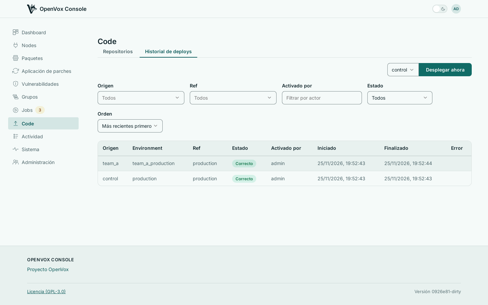

Usar
Desplegar código
Despliegue código de Puppet desde uno o varios repositorios de control en los Environments a partir de los que compila openvoxserver.
La consola despliega código de Puppet desde repositorios de control (un Puppetfile y manifiestos en git) en el directorio de Environments que lee openvoxserver, mediante g10k. Cada rama de un repositorio de control se convierte en un Environment.
Ver los deploys requiere code:read; iniciar uno requiere code:deploy.
Activar el despliegue de código
El despliegue de código permanece desactivado hasta que la consola sabe dónde está g10k, qué desplegar y dónde ponerlo:
| Ajuste | Qué es |
|---|---|
CONSOLE_G10K_BIN_PATH |
el programa g10k. La imagen de contenedor de la consola lo incluye y ya define este ajuste |
CONSOLE_CONTROL_REPO_URL |
un único repositorio de control desde el que desplegar |
CONSOLE_CODE_SOURCES_PATH |
o, en su lugar, un archivo que declara varios (véase más abajo) |
CONSOLE_CODE_DIR_PATH |
el directorio del que openvoxserver lee su código; la consola despliega en su directorio environments |
CONSOLE_CODE_WEBHOOK_SECRET |
el secreto con el que se firman los webhooks del servidor de git |
CONSOLE_CONTROL_REPO_URL y CONSOLE_CODE_SOURCES_PATH no pueden definirse a la vez: la consola se niega a arrancar en lugar de combinarlos.
La consola y openvoxserver deben compartir ese directorio. Con paquetes en un solo host, apunte CONSOLE_CODE_DIR_PATH a /etc/puppetlabs/code y permita que el usuario de la consola escriba en su directorio environments.
Con el stack de contenedores
El archivo compose de producción no pasa ninguno de estos ajustes a la consola, ni le da el volumen de código de openvoxserver. Añada ambas cosas en un compose.code.yml junto a él:
services:
console:
environment:
CONSOLE_CONTROL_REPO_URL: ${CONSOLE_CONTROL_REPO_URL:?set the control repository}
CONSOLE_CODE_DIR_PATH: /etc/puppetlabs/code
CONSOLE_CODE_WEBHOOK_SECRET_FILE: /run/secrets/code_webhook_secret
volumes:
- openvoxserver-code:/etc/puppetlabs/code
secrets:
- code_webhook_secret
secrets:
code_webhook_secret:
file: ./secrets/code_webhook_secret
Después páselo tras el archivo principal en cada comando:
docker compose -f docker-compose.yml -f compose.code.yml up -d console
Esta combinación aún no se ha recorrido de principio a fin como las guías de instalación. Si un deploy funciona pero openvoxserver no ve el código, compruebe que los dos contenedores muestran los mismos archivos en /etc/puppetlabs/code/environments.
Desplegar desde varios repositorios de control
Para desplegar desde más de un repositorio, declárelos en un archivo YAML y apunte CONSOLE_CODE_SOURCES_PATH a él:
sources:
control:
remote: git@github.com:org/control-repo.git
prefix: false # branch production -> environment production
team_a:
remote: git@github.com:org/team-a-control.git
prefix: true # branch production -> environment team_a_production
private_key: /etc/openvox-console/keys/team_a
webhook_secret_file: /etc/openvox-console/team_a_webhook
- El nombre de una fuente solo puede contener letras minúsculas, dígitos y
_, porque pasa a formar parte de los nombres de Environment. prefixdecide los nombres de Environment que producen las ramas de una fuente:trueles antepone el nombre de la fuente,falseo sin definir los deja tal cual, y una cadena se usa como prefijo. Dos fuentes no pueden acabar con el mismo prefijo, así que como mucho una puede ir sin prefijo; de lo contrario, la consola se niega a arrancar.- Cada fuente puede tener su propia clave de despliegue y su propio secreto de webhook.
Una nueva fuente con prefijo se despliega correctamente y no cambia nada hasta que se clasifican Nodes en sus nuevos nombres de Environment. Nada traslada los Nodes allí por usted.
Deploy
Abra Code. La pestaña Repositorios lista cada repositorio con sus Environments y su último deploy; Deploy en un repositorio despliega su rama production. Desplegar ahora, en la pestaña Historial de deploys, hace lo mismo con el repositorio por defecto.
Los deploys de un mismo Environment nunca se solapan, por muchas instancias de la consola que haya en marcha. Cada uno aparece en el historial de deploys, con quién lo inició, y en la página Actividad.


Desplegar en cada push
Para desplegar cada vez que se haga push a una rama, añada un webhook al repositorio en su servidor de git:
- URL:
https://console.example.com/api/v1/code-deploys/webhooko, para una fuente entre varias,https://console.example.com/api/v1/code-deploys/webhook/<source name> - Content type: JSON
- Secret: el secreto de webhook de esa fuente
- Events: pushes
La consola comprueba la firma de cada entrega (la cabecera X-Hub-Signature-256) con el secreto y despliega la rama a la que se hizo push.
Leer la pestaña Repositorios
Cada repositorio muestra dos recuentos de Nodes, y lo útil es la diferencia entre ellos:
- Asignados: Nodes que la clasificación envía a uno de los Environments del repositorio.
- Reportando: Nodes cuya última ejecución de Puppet usó uno de ellos.
Asignados sin ninguno reportando significa código que se ha desplegado pero que aún no ha ejecutado ningún Node. Reportando sin ninguno asignado significa Nodes que ejecutan código al que no los envía ningún grupo: normalmente un Environment que quedó de una fuente eliminada, o un Node con un environment definido en su propio puppet.conf.
Tamaño es el tamaño de los archivos desplegados, no el uso de disco: g10k comparte módulos entre Environments, así que los tamaños de los repositorios se solapan.
Quitar una fuente de la configuración detiene sus deploys, pero deja sus Environments en el disco, donde openvoxserver sigue compilando a partir de ellos. Elimínelos usted mismo si eso es lo que pretendía.